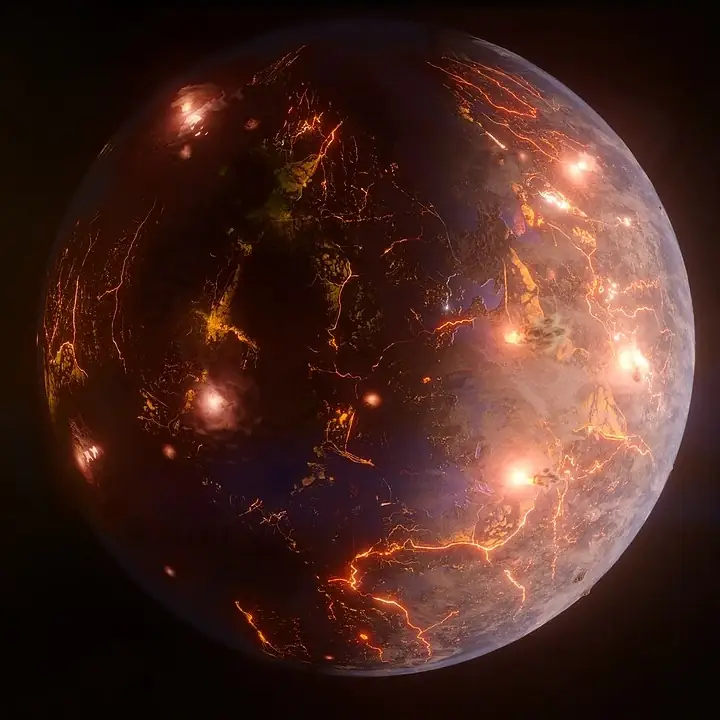

LP 791-18 d — Exoplaneta

Introdução e História
LP 791-18 d é um exoplaneta do tamanho da Terra descoberto em 2023 orbitando a estrela anã vermelha LP 791-18, localizada a cerca de 90 anos-luz da Terra na constelação de Cratera.
Ele foi identificado com base em observações de trânsito pelo satélite TESS da NASA, e sua descoberta é considerada um avanço importante no estudo de mundos terrestres fora do nosso Sistema Solar.
Características Físicas: Massa, Tamanho e Órbita
LP 791-18 d tem um raio estimado de aproximadamente 1,03 vezes o da Terra e uma massa de cerca de 0,9 vezes a massa terrestre, sugerindo que se trata de um planeta predominantemente rochoso.
Ele orbita muito próximo de sua estrela hospedeira, com um período orbital de cerca de 2,8 dias terrestres a uma distância de 0,01992 UA.
Potencial de Habitabilidade
- Posição na zona habitável: LP 791-18 d está perto do limite interno da zona habitável, onde teoricamente água líquida poderia existir sob condições específicas.
- Aquecimento por maré: Interações gravitacionais com outro planeta do sistema podem causar aquecimento interno e possivelmente vulcanismo intenso.
- Atmosfera desconhecida: Ainda não existem observações diretas de atmosfera ou composição superficial.
A combinação desses fatores faz de LP 791-18 d um alvo intrigante para estudos futuros sobre exoplanetas rochosos potencialmente ativos.
Curiosidades
LP 791-18 d pode ser um planeta com atividade vulcânica intensa devido ao aquecimento por maré, similar ao que ocorre na lua Io do Sistema Solar.
Por estar muito próximo da estrela, o planeta pode estar em rotação travada, com um lado sempre voltado para ela.
Esse mundo ajuda a ampliar a compreensão de como planetas do tamanho da Terra se comportam em sistemas com múltiplos planetas ao redor de estrelas anãs vermelhas.
Origem do Nome
O nome “LP 791-18 d” segue a convenção científica de designação de exoplanetas: combina o catálogo da estrela hospedeira com uma letra que indica a ordem de descoberta no sistema.
Referências
- NASA Science. LP 791-18 d — Exoplanet Exploration. Disponível em: https://science.nasa.gov/exoplanet-catalog/lp-791-18-d/ . Acesso em: 28 dez. 2025.
- Nature. A temperate Earth-sized planet with tidal heating transiting an M6 star. Disponível em: https://www.nature.com/articles/s41586-023-05934-8 . Acesso em: 28 dez. 2025.